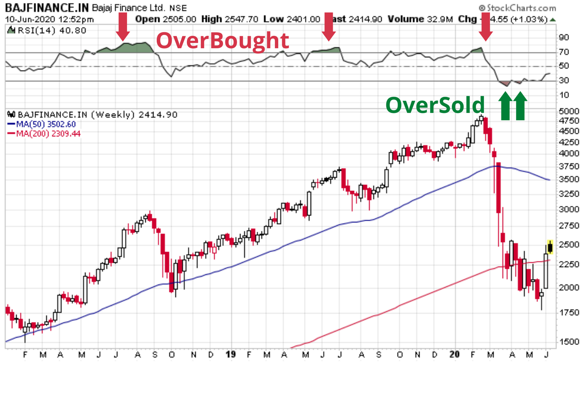
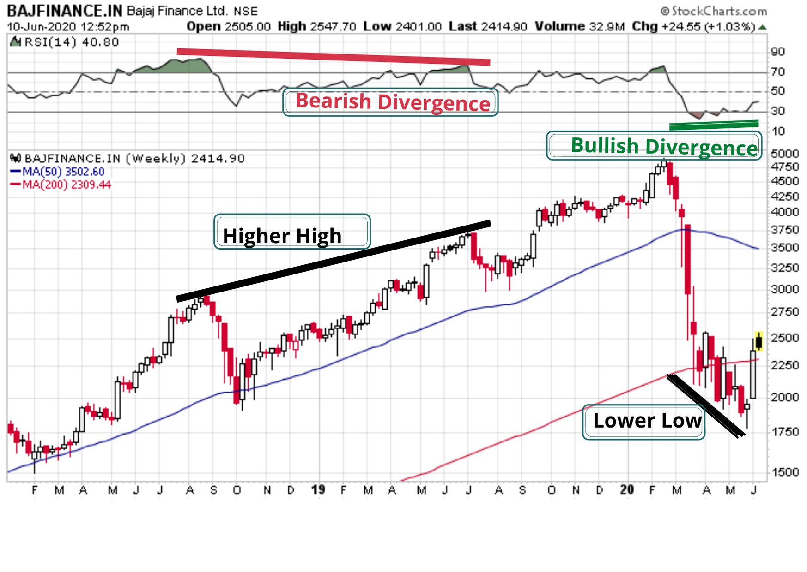
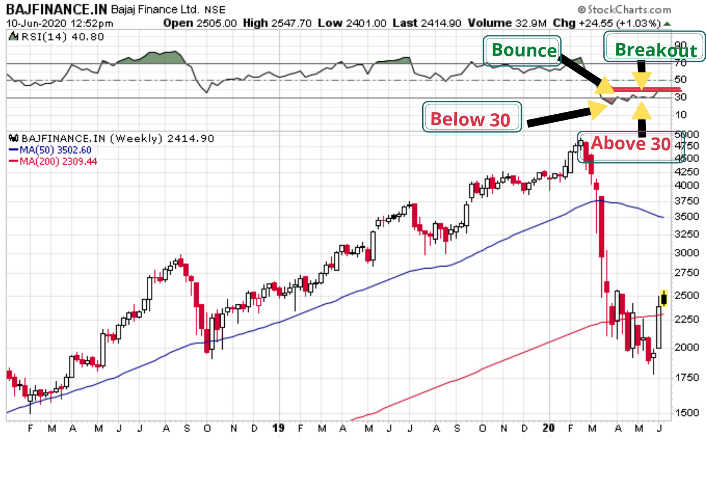
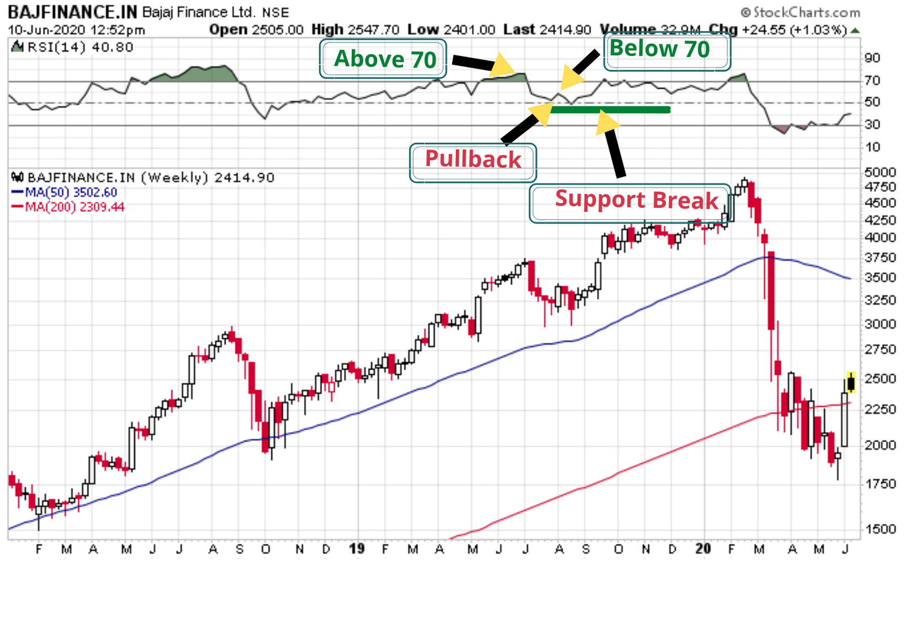

Wondering how to make predictions about the prices changes in shares?
RELATIVE STRENGTH INDEX (RSI) can be your tool.
RSI is a momentum oscillator that measures the speed and change of price movements which ranges between 0 to 100 i.e. [0-100].
Generally, when RSI goes beyond the 70 mark the share is considered OverBought and when it goes below the 30 mark the share is considered OverBought and when it goes below the 30 mark the share is considered OverSold. These traditional levels can be adjusted as per the requirements of security and analytics.

CALCULATION:
RSI = 100- (100/ 1+RS) Where, RS = Average Gain/ Average Loss For example, if we want to make predictions based on a 14 period data, then First calculations of average gain and loss are based on the 14 period data
- First Average Gain = (Sum total of Gains in the course of last 14 periods) / 14.
- First Average Loss = (Sum total of Losses in the course of last 14 periods) / 14
Average Gain = [(Previous period Average Gain) x 13 + current period Gain] / 14.
Average Loss = [(Previous period Average Loss) x 13 + current period Loss] / 14.
You can click on the link to get an example of RSI calculation click here to download
Let’s try to understand some of the signal and see how to interpret.
1) Divergences
When directional momentum does not confirm price, reversal point is signaled by Divergences.Strengthening Momentum: A bullish divergence occurs when the underlying security makes a lower low and RSI forms a higher low.
Weakening Divergence: A bearish divergence forms when the security records a higher high and RSI forms a lower high.

2) Failure Swings
Failure swings ignores the concept of divergences(that is the price actions) and focus solely on RSI for signals.Bullish Failure Swing: RSI moves below 30 (oversold), bounces above 30, pulls back, holds above 30 and then breaks its previous high. In the chart Bajaj Finance RSI first goes below 30, bounces back, starts falling but fails to reach 30 mark and creates a breakout.

Bearish Failure Swing: RSI moves above 70, pulls back, bounces, fails to exceed 70 and then breaks its prior low. You can see in the chart that Bajaj Finance RSI first goes beyond 70, gets pulled back, starts increasing but is unable to cross 70 mark and creates a support level.

3) Trend ID
Last but not the least, Constance Brown identifies that in a:Bull market: RSI tends to fluctuate between 40 and 90 with the 40-50 zones acting as support.
Bear market: RSI tends to fluctuate between 10 and 60 with the 50-60 zone acting as resistance.
Conclusion:
The versatility of RSI as a momentum oscillator has stood the test of time. These levels can be adjusted as per the requirements of the analyst. It has proved to be a flexible tool. Markets can at times be very volatile giving misleading results as markets cannot be timed, but with proper knowledge and study this tool can be of much use to many.